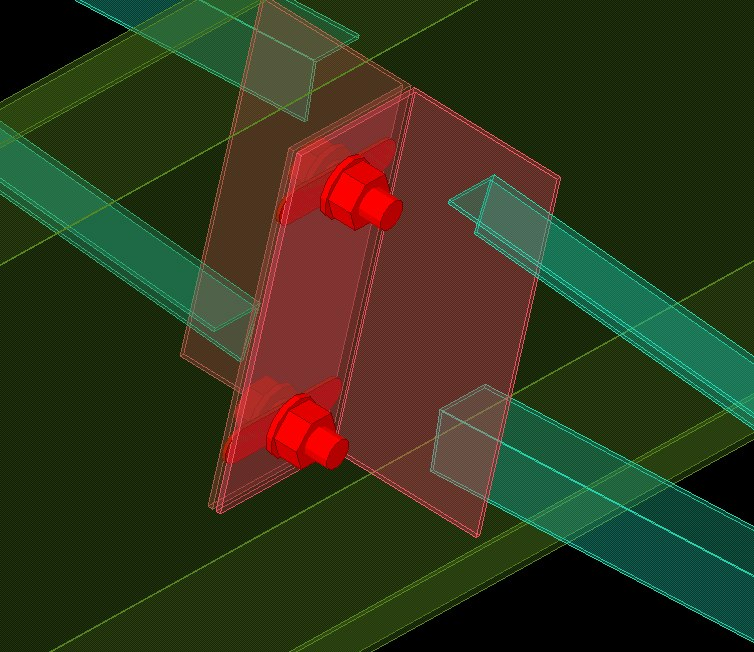
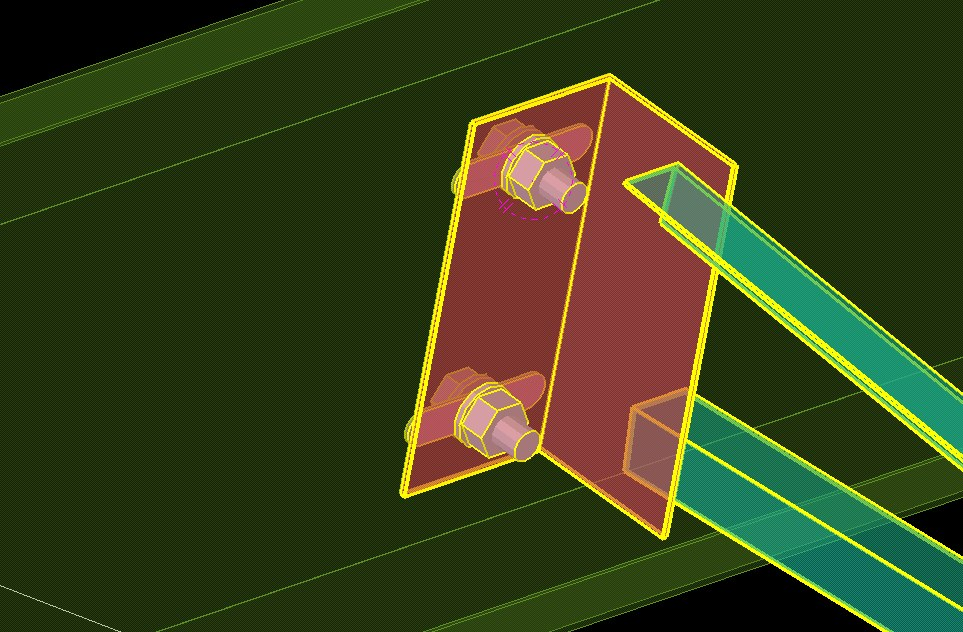
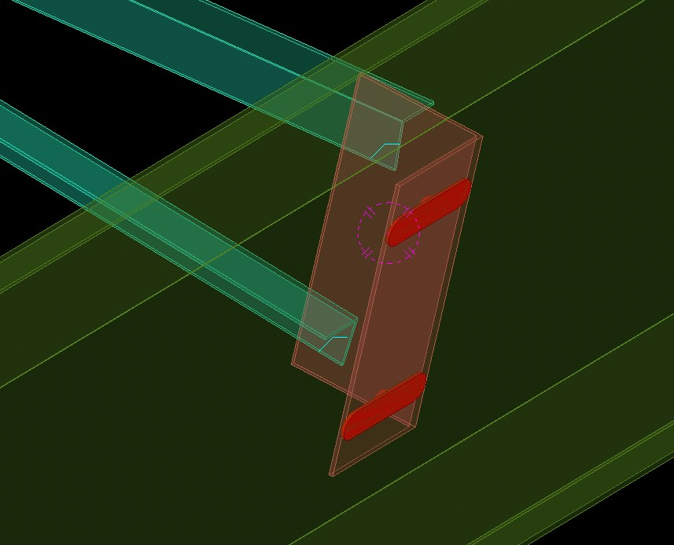

2V Cross Anti-Sag Roof 1.44 — có gì mới
Bản 1.44 hoàn thiện tuỳ chọn Slots in (lỗ slot trên tab Bolts): đúng theo vai trò part trên cả xà gồ giữa lẫn xà gồ đầu/cuối, và lỗ slot không còn nhảy khi đổi tuỳ chọn.
Tóm tắt nhanh
- Slots in chọn theo vai trò: Default / Klip / Purlin / All; đã kiểm trên xà gồ đầu/cuối và xà gồ giữa.
- Xà gồ đầu/cuối (End purlins hoặc Disconnect purlin): nhóm chỉ khoét lỗ klip theo cùng quy tắc.
- Lỗ slot không còn nhảy khi đổi các tuỳ chọn.
1. Slots in theo vai trò part
Với xà gồ đầu/cuối (klip + xà gồ) và xà gồ giữa (klip, xà gồ, klip), kết quả đúng như tên chọn:
- Purlin: chỉ khoét slot ở xà gồ.
- Klip: chỉ khoét slot ở klip.
- All: khoét slot ở cả hai.



2. Xà gồ đầu/cuối và Disconnect purlin
Khi chọn End purlins (No start / No end / No side) hoặc Purlin = Disconnect, nhóm chỉ khoét lỗ klip theo cùng quy tắc: Slots in = Purlin thì lỗ klip tròn; Klip hoặc All thì slot ở klip. Trước đây lỗ slot "nhảy" khi đổi các tuỳ chọn này.
3. Giữ các điểm mới của 1.39
Across row (hàng bu-lông thứ hai ngang thanh giằng, cho cả thép góc lẫn thép máng C; giằng C: spacing 30 + Across row 40 = 4 bu-lông mỗi đầu) và kiểu thanh giằng được lưu khi Modify.
4. Cách nâng cấp
- Ở mục Tải về bên dưới, tải gói
iVidLab.AntiSag2VCross_1.44P.tsep. - Nếu đã cài bản cũ, gỡ bản cũ trong Tekla Extension Manager trước.
- Nhấp đúp file
.tsep, tick phiên bản Tekla rồi bấm Import. Gói được cài khi Tekla khởi động lần tiếp theo.
2V Cross Anti-Sag Roof 1.44 — what's new
Version 1.44 refines the Slots in option (slotted holes on the Bolts tab): correct by part role on both middle and first/last purlins, and the slots no longer jump when you change options.
At a glance
- Slots in by role: Default / Klip / Purlin / All; checked on first/last and middle purlins.
- First/last purlins (End purlins or Disconnect purlin): the group only drills the clip holes, by the same rule.
- Slots no longer jump when you change options.
1. Slots in by part role
On first/last purlins (clip + purlin) and middle purlins (clip, purlin, clip), the result matches the name:
- Purlin: slots only in the purlin.
- Klip: slots only in the clip.
- All: slots in both.
2. First/last purlins and Disconnect purlin
With End purlins (No start / No end / No side) or Purlin = Disconnect, the group only drills the clip holes by the same rule: Slots in = Purlin gives round clip holes; Klip or All gives slots in the clip. Previously the slots jumped when these options changed.
3. Kept from 1.39
Across row (a second bolt row across the brace, for angle and C-channel braces; C brace: spacing 30 + Across row 40 = 4 bolts at each end) and the brace layout being kept on Modify.
4. How to upgrade
- In the Download section below, get
iVidLab.AntiSag2VCross_1.44P.tsep. - If an older version is installed, uninstall it in Tekla Extension Manager first.
- Double-click the
.tsepfile, tick your Tekla version and click Import. It is installed the next time Tekla starts.
Tải vềDownload

Nhóm Zalo người dùng iViDLabiViDLab user group on Zalo
Quét mã QR hoặc bấm nút bên cạnh để vào nhóm: hỏi đáp khi sử dụng, báo lỗi và nhận thông báo bản cập nhật mới.
Scan the QR code or use the button to join the group: usage questions, bug reports and new release announcements.
Liên hệ iViDLabContact iViDLab
Theo dõi fanpage Facebook hoặc gửi email để được hỗ trợ và góp ý.
Follow the Facebook page or send an email for support and feedback.